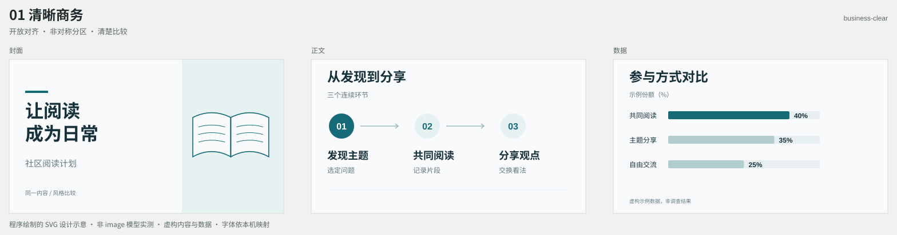
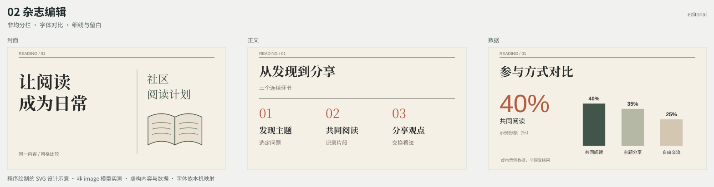
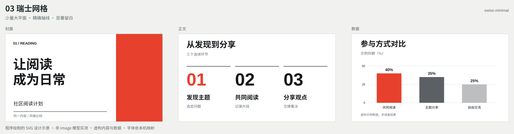
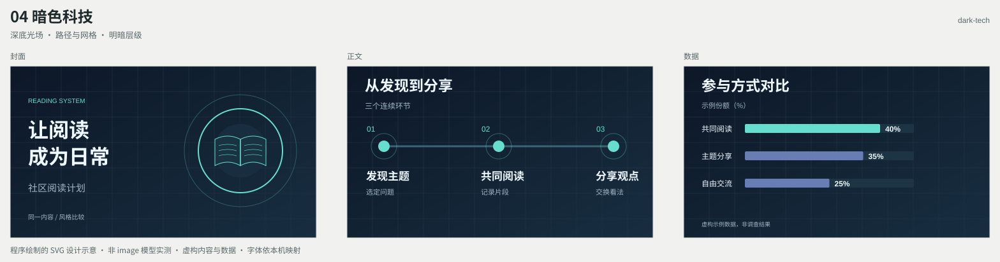
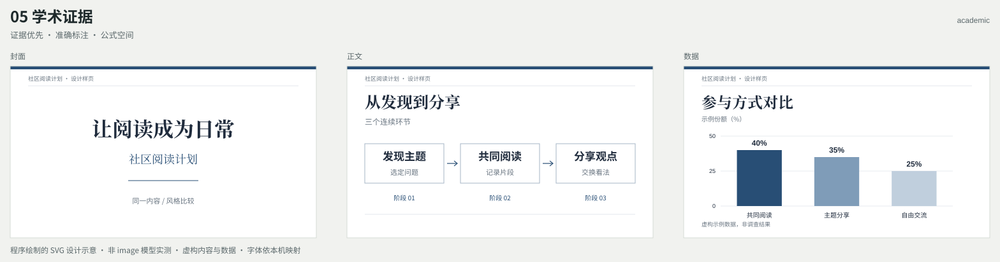
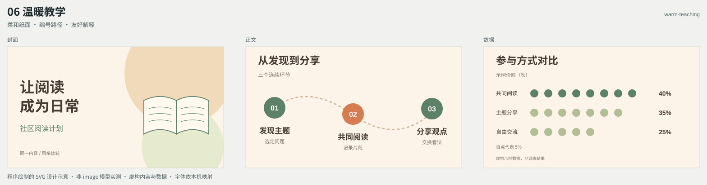
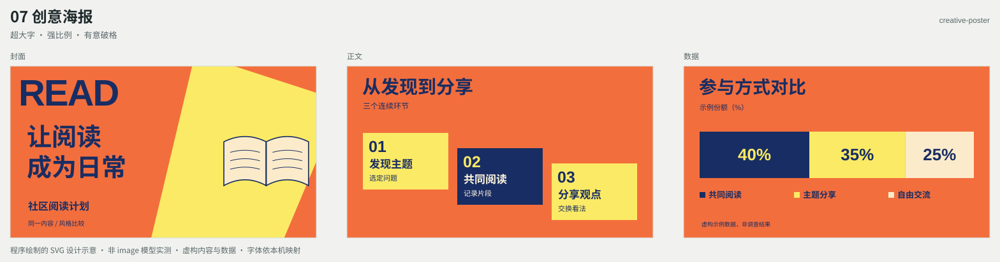
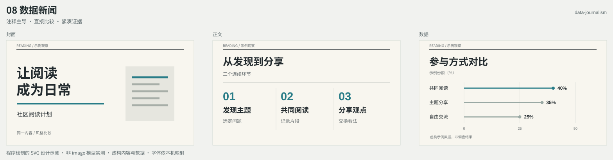

01
清晰商务
business-clear开放对齐 · 非对称分区 · 清楚比较

图文非对称分区、开放式对齐；正文沿单一路径推进，数据使用直接比较。
8 种风格使用同一组示例，每幅依次展示封面、正文和数据页。可按编号或英文 ID 选择；没有偏好时由 AI 根据材料自动选择。
这些是程序绘制的 SVG 设计示意，不是 image 模型生成或实测效果。内容与数据均为虚构。实际 PPT 将由图片模型依据你的材料设计，再重建可编辑对象，不会复制这些示例文字。
business-clear开放对齐 · 非对称分区 · 清楚比较

图文非对称分区、开放式对齐；正文沿单一路径推进，数据使用直接比较。
editorial非均分栏 · 字体对比 · 细线与留白

细线和非均分栏建立层级；大标题、跨栏语句与局部大数字形成节奏。
swiss-minimal少量大平面 · 精确轴线 · 显著留白

少量大尺度平面、非对称分区、精确对齐和超大数字；用负空间强化焦点。
dark-tech深底光场 · 路径与网格 · 明暗层级

深色场景中突出主路径或主对象；局部光色、稀疏网格和清楚的阅读方向。
academic证据优先 · 准确标注 · 公式空间

标题、证据、解释和来源层级明确；证据图占合理主面积，图表保留坐标与注释。
warm-teaching柔和纸面 · 编号路径 · 友好解释

以编号、示例、路径和小型说明插画分步建立理解；留出解释空间。
creative-poster超大字 · 强比例 · 有意破格

大字、剪切平面、对角或阶梯节奏和少量跨区元素；保持主要阅读顺序。
data-journalism注释主导 · 直接比较 · 紧凑证据

直接标注、横向比较、微型图和来源行组织证据；标题和注释帮助读者理解比较口径。